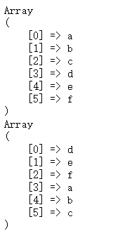
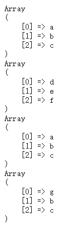
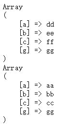
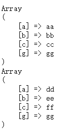

原文出处:本文由博客园博主Cecil-1995提供。
原文连接:https://www.cnblogs.com/Cecil_1995/p/10909367.html
原文连接:https://www.cnblogs.com/Cecil_1995/p/10909367.html
array_merge是很常用的数组合并函数，但是两个数组直接相加对开发也是很有帮助的，两者之间有什么差别，这里记录一下：
首先是以数字为索引
array_merge会将两个数组按照先后顺序组成一个新的数组
$array1 = ["a", "b", "c"];
$array2 = ["d", "e", "f"];
print_r(array_merge($array1, $array2));
print_r(array_merge($array2, $array1));
输出结果如下：

而两个数组直接相加，则不会完全保留，而是只保留前者的。同时如果两个数组的大小不一致的话，结果的长度会是两个数组长度的最大值，当第一个数组的大小不够时会从后面的数组对应的位置取值补充
$array1 = ["a", "b", "c"];
$array2 = ["d", "e", "f"];
$array3 = ["g"];
print_r($array1+$array2);
print_r($array2+$array1);
print_r($array1+$array3);
print_r($array3+$array1);
输出结果如下：

再来看看当数组以字符串为索引时
array_merge对于相同的key会进行替换，后者取代前者，对于没有重复的key会按顺序进行拼接
$array1 = ['a' => 'aa', 'b' => 'bb', 'c' => 'cc'];
$array2 = ['a' => 'dd', 'b' => 'ee', 'c' => 'ff', 'g' => 'gg'];
print_r(array_merge($array1, $array2));
print_r(array_merge($array2, $array1));
输出结果如下：

而两个数组直接相加，对于相同的key会保留前者，对于没有重复的key会按顺序进行拼接
$array1 = ['a' => 'aa', 'b' => 'bb', 'c' => 'cc'];
$array2 = ['a' => 'dd', 'b' => 'ee', 'c' => 'ff', 'g' => 'gg'];
print_r($array1 + $array2);
print_r($array2 + $array1);
输出结果如下：

个人学习记录，仅供参考~